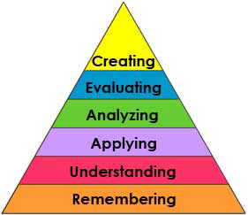
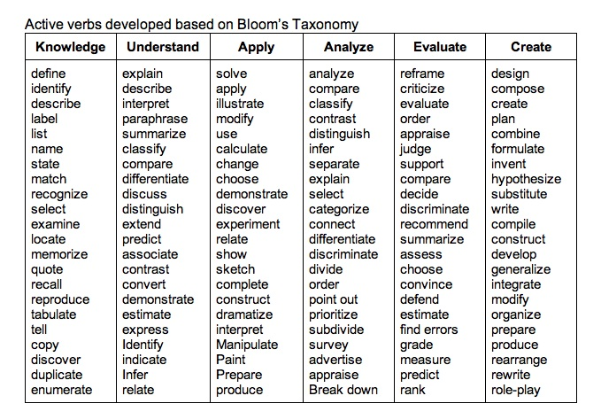

Learning Objectives
Introduction to Learning Objectives
A learning objective is a statement of what students will be able to do when they have completed an individual unit of instruction such as skills, knowledge, and attitudes (Dick & Carey, 1978). According to Magner, a learning objective has three major components:
|
Performance/Behavior |
Conditions |
Criterion |
||
|---|---|---|---|---|
|
The Performance component is a description of the behavior that learners are expected to perform. It should be measurable and observable. It describes what the learner will be doing when demonstrating mastery of an objective. |
|
The Conditions component of an objective is a description of the circumstances under which the performance will be carried out. |
The criterion is a description of the criteria for acceptance of a performance as sufficient, indicating mastery of the objective. In other words, how well must it be done? |
EXAMPLE:
Here's an example of an objective statement: "Given a set of data the
students will be able to compute the standard deviation."
This objective statement has the following components:
- Condition: Given a set of data.
- Behavior: The student will be able to compute the standard deviation.
- Criterion (implied): The number computed will be correct.
The Difference Between Course Goals & Learning Objectives
How does an objective compare to a goal statement? A course goal is a statement of the intended general outcomes of an instructional unit or program. Goal statements describe global learning outcomes and are demonstrated at the course level.
A learning
objective is a statement of one of several specific performances, the
achievement of which contributes to the attainment of the goal and it
is illustrated within a learning unit. A single goal may have many
specific subordinate learning objectives.
Learning Objectives are guides to
- Selection of content
- Development of an instructional strategy
- Development and selection of instructional materials
- Development and facilitation of online interactives
- Construction of tests and other instruments for assessing and evaluating student learning outcomes
How to Effectively Write a Learning Objective Using Bloom's Taxonomy
In an online or hybrid course, each learning unit should have clear, measurable objectives, containing all three components above. These objectives guide the learner in understanding what he or she will be expected to know or do as a result of its completion. All of the subject content, learning activities and assessments in the unit should be aligned to these objectives.
|
In 1956, Benjamin Bloom developed what is commonly referred to
as
Bloom's Taxonomy, illustrating the development of higher-ordered
thinking skills. The following are some active verbs developed based on
Bloom’s Taxonomy. It is recommended that you use these verbs in
developing your learning objective. Some examples of active verbs were
also developed based on Bloom's Taxonomy. |
|  |
|